Rear Vision Camera: Service and Repair
Rearview Camera System
--> [ Rearview Camera from Liftgate ]
--> [ Rearview Camera from Retainer ]
--> [ Rearview Camera System Control Module ]
Component location of rear view camera in rear lid - arrow -
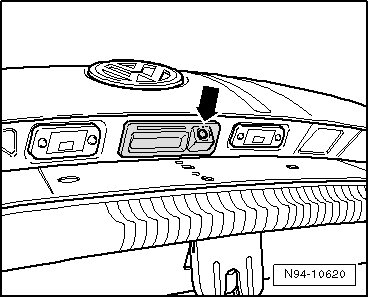
Rearview Camera from Liftgate
Removing
Before starting repair work, perform the following points:
- Switch off ignition, switch off all electrical consumers and remove ignition key.
In order to remove the camera, the lower rear lid trim must be removed first, --> Body Interior 70 Removal and Installation.
- Unclip cover - A - from rear lid.
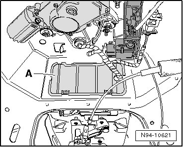
- Push both securing clips - arrows - inward out of assembly holes.
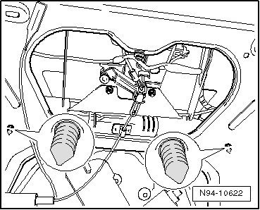
- Pull out both wiring harnesses - arrows - from rear lid interior so that harness connectors in both wiring harnesses emerge.
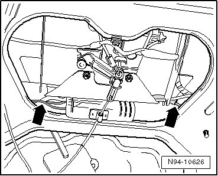
- Press locking mechanisms of harness connectors and disconnect them.
- Remove both nuts on bracket for emergency release cable - arrows -.
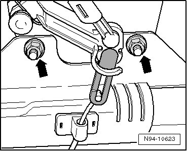
- Remove emergency release cable by moving gray plastic bracket in direction - A - and simultaneously moving emergency release cable in direction - B - until both parts unhook from lock linkage and can be removed.
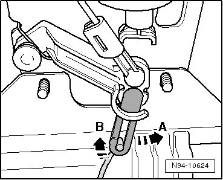
- Press locking mechanism of harness connector and disconnect it.
- Remove both bolts - arrows - on rear view camera holder.
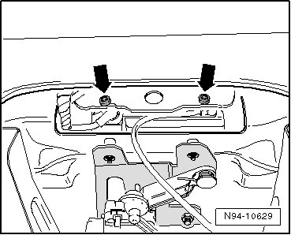
- While being careful of connected lines, remove rear view camera together with retainer in - direction of arrow - from rear lid.
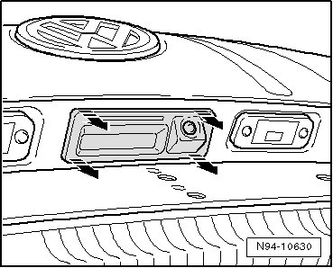
Remove rear view camera from holder, --> [ Rearview Camera from Retainer ].
Installing
Install in reverse order of removal, noting the following:
Make sure that wire connection is routed as depicted in the illustration - arrow -.
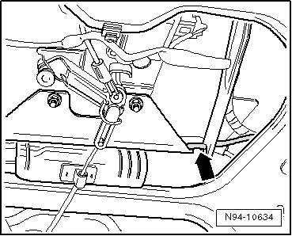
- After installing, clean rear view camera optical lens using a lint-free cloth so that later a clean image is ensured.
- Calibrate the system anew, --> [ Rearview Camera System, Calibrating ] Testing and Inspection.
Rearview Camera from Retainer
Removing
- Remove both bolts - arrows -.
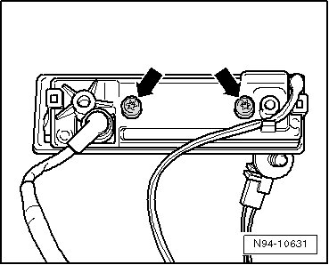
- Remove retaining bracket in - direction of arrow - and pull rear view camera - A - out of holder.
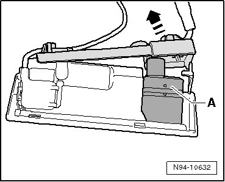
- Guide wire connection of rear view camera out through opening in retaining bracket.
- Separate securing clip from harness connector.
Now the harness connector fits through opening in retaining bracket and both parts can be disconnected from each other.
Installing
Install in reverse order of removal.
Rearview Camera System Control Module
Control module is installed in luggage compartment behind right side wall trim.
Removing
Before starting repair work, perform the following points:
- Switch off ignition, switch off all electrical consumers and remove ignition key.
- Remove center loading floor - A - in luggage compartment.
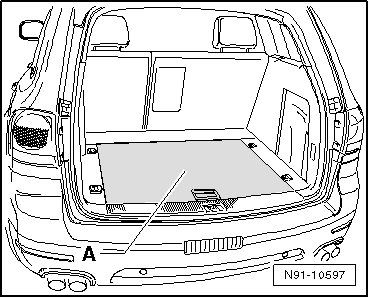
- Remove cover from lock carrier.
- Remove tie-downs - arrows -.
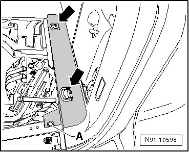
- Remove screw - A - and remove right loading floor.
- Remove right D-pillar trim
- Remove screws - A - and unclip interior lamp - B - from trim.
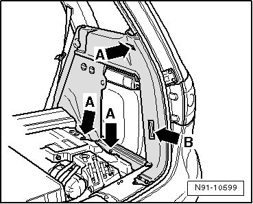
- Unclip trim from D-pillar in - direction of arrow -.
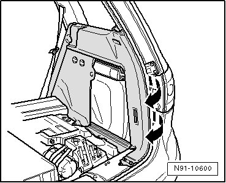
- Unclip trim at side window in - direction of arrow -.
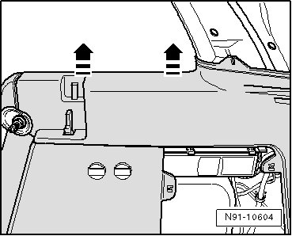
- Carefully swing trim - 1 - as far in - direction of arrow - so that control module for rear view camera system - A - is accessible.
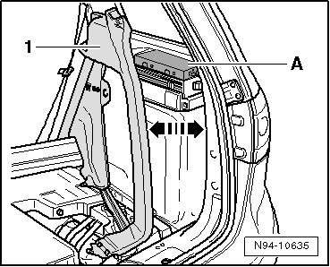
- Press both locking mechanisms - arrows - and remove control module for rear view camera system.
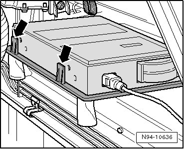
• It is possible that the control module is also secured with Velcro on the bottom. Then, carefully detach control module from base plate.
- Press locking mechanism - A - and fold over the bracket in direction - B -. Then disconnect harness connector from control module.
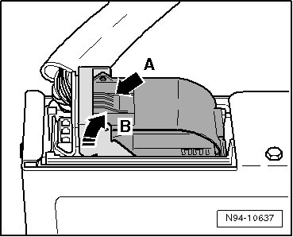
- Press locking mechanism - A - and pull harness connector out of control module in direction - B -.
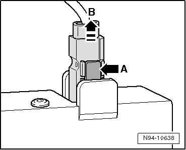
Installing
Install in reverse order of removal.
If necessary, replace Velcro strips - arrows - on bottom of control module.
Only if the control module has been replaced:
- Calibrate the system anew, --> [ Rearview Camera System, Calibrating ] Testing and Inspection.